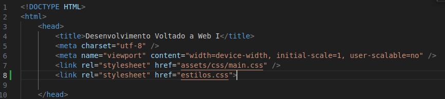

Verdadeira: Uma mesma folha de estilos pode ser usada por várias páginas, o que é uma prática eficiente para manter a consistência na aparência de um site.
Verdadeira: Uma mesma página pode usar várias folhas de estilo. Isso permite uma maior flexibilidade no design, pois diferentes estilos podem ser aplicados em partes específicas da página.
Verdadeira: Se um navegador não suportar uma folha de estilos requerida pela página, pode haver uma degradação na qualidade da apresentação, mas a informação ainda estará acessível. Isso ocorre porque o conteúdo HTML não é afetado pela falta de suporte a CSS.
Falso.
Verdadeira: A linguagem CSS (Cascading Style Sheets) usada para construir folhas de estilo é uma recomendação do W3C (World Wide Web Consortium), o que significa que é um padrão internacional amplamente aceito para estilização de páginas da web.
Resposta: a) Link para Folhas de Estilo Externas: Os estilos são incluídos usando a tag ``. Isso é feito com as linhas:
Essas linhas estão vinculando dois arquivos de estilo externos (`main.css` e `estilos.css`) à página. Esses arquivos contêm as regras de estilo que serão aplicadas ao conteúdo da página. b) Estilos Inline e Internos: Dentro do arquivo HTML, também são usados estilos diretamente nas tags HTML. Por exemplo, em `
`, a classe `is-preload` é usada para aplicar estilos específicos a esse elemento. A justificativa para essa abordagem é que ela permite separar a estrutura do conteúdo HTML (no arquivo `index.html`) da apresentação (nos arquivos de estilo externos), seguindo boas práticas de desenvolvimento web. Além disso, a aplicação de estilos inline ou internos é feita em casos específicos onde é necessário estilizar um elemento individualmente, mas a maioria das regras de estilo é mantida em arquivos externos para facilitar a manutenção e a consistência do design em todo o site.